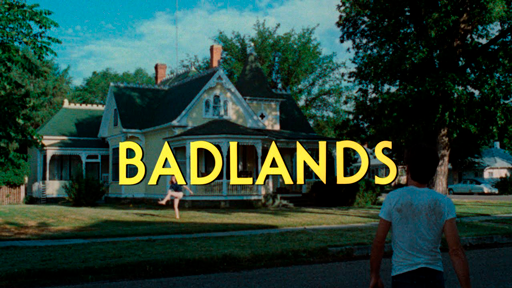

Criminality and Celebrity in Badlands
I recently rewatched Terrence Malick's 1973 film, Badlands, a movie I have seen several times, formally analyzed for classes, and despite all that conscious attention I've paid to the sounds and sights on the screen, there was a theme that I hadn't noticed before (or maybe hadn't cared to). Perhaps I was enthralled by the gorgeous coloring, the dynamic, yet motivated camera work, and the terse dialogue, which echoes of Hemingway, during this screening, however, Malick's commentary on the celebrity of those who do bad was what stuck me with me through the drama and even after the credits rolled; enough apparently to warrent this blog post.
I'll kiss your ass if he don't look like James Dean.
The seeds of this topic are subtly lain from the beginning of film with comparisons of Kit, played by Martin Sheen, to James Dean and, nutured throughout with soft, almost disregardable, comments, pump present through the movie's principal arteries, culminating, at the end, when Kit, in authority's custody, hands out his personal belongings as memorabilia to his captures like John Bonham tossing a drum stick to a clamouring crowd of souvenir-hungry fans.
There are also other moments that touch upon the fame of being bad and the mechanisms of the American imagination regarding those who achieve stardom. Of the former, there's an example where Sissy Spacek's character, Holly, narrates how the news of their (Kit's) murder spree had spread across the nation exciting local organization and governmental action. The latter however is less immediately obvious, but better serves to unveil the film's discourse of fame.
This takes place in the later half of the film when, with their relationship already in decay, Holly amuses herself by reading aloud some Myth and Fact section from a pop culture magazine. The purpose of the column is to debunk or validate various rumors about the lives and relationships of the famous few, similiar to the sort of discussions well dressed people hold about the potentional connections between other fictional characters. While not heavy handed, which given the way Mallick works is probably an indication of its importance, the treatment does lean towards the idea that fame transforms the regular and real into the extraordinary and mythical, worthy of fiction and needing, for the common good, of clarification.